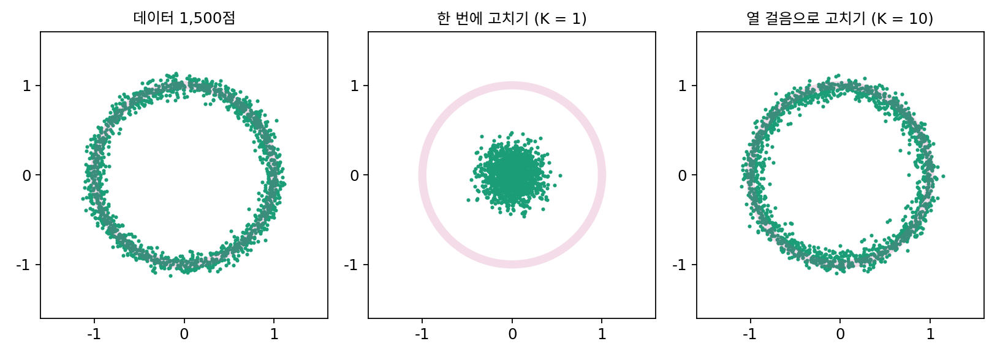
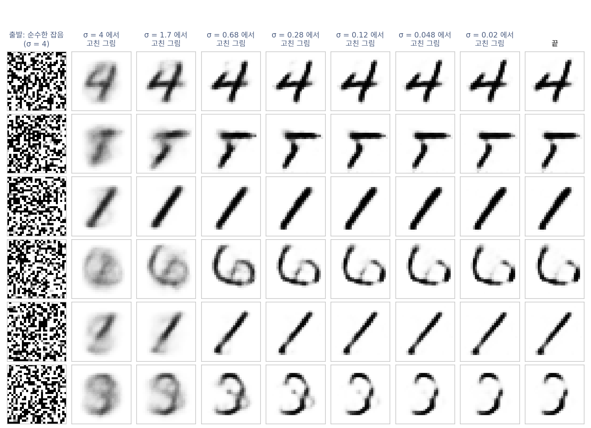
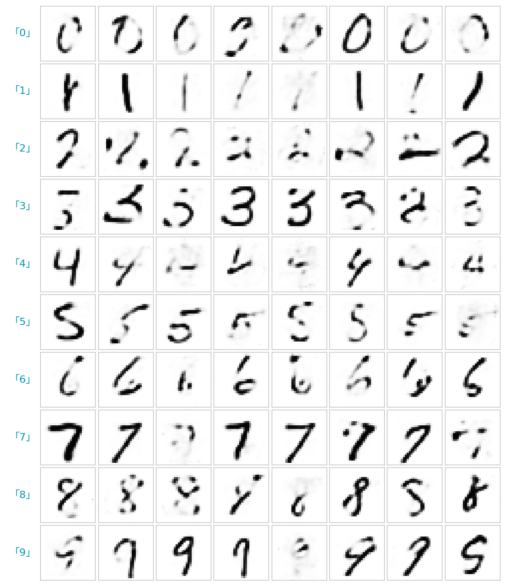

수리공: 고치기를 거듭하면 만들기가 된다
이제 복원기 하나로 어떤 σ 든 고칠 수 있고, 원하면 라벨까지 받는다. 이 복원기에 데이터에서 온 것이 하나도 없는 순수한 잡음을 주고 「σ = 3 만큼 망가진 그림」이라고 알려 주면 어떻게 될까? 고리 데이터에서 크기 3인 정규분포 잡음으로 점을 뿌리고 한 번에 고치면, 점들은 모두 가운데 원점 둘레(반지름 평균 0.20)에 모인다. 고리 위에 내려앉은 점은 하나도 없다. 이렇게 망가진 그림에 어울리는 원래 그림은 고리 전체이고, 복원기는 시킨 대로 그 평균을 냈다. 숫자 그림도 같다. σ = 4 의 잡음을 한 번에 고친 그림은 회색 칸이 22.9%인 흐린 덩어리이고, 숫자를 맞히도록 따로 학습한 판정용 분류기(시험 그림의 97.90%를 맞힘)는 1,000장 가운데 616장을 「8」로 읽는다.
수리공의 비유
망가진 물건을 수없이 고쳐 본 수리공을 떠올려 보자. 살짝 긁힌 것부터 형체를 알아보기 힘든 것까지 고치다 보니, 멀쩡한 물건이 어떻게 생겼는지 손이 알게 되었다. 이 수리공에게 형체 없는 재료 덩어리를 주면, 한 번에 완성품을 내놓으려 하지 않는다. 덩어리를 「심하게 망가진 물건」으로 보고 큰 모양만 조금 잡는다. 그러면 덩어리는 「조금 덜 망가진 물건」이 되고, 수리공은 그것을 다시 그만큼 망가진 물건으로 보고 고친다. 이것을 되풀이하다 보면, 수리공은 고치기만 했는데 처음 보는 새 물건이 하나 만들어져 있다. 망가진 것을 수없이 고치다가 처음부터 만드는 법을 자연스럽게 터득한 셈이다.
복원기로 옮기면 이렇다. σ 를 3에서 0.02까지 로그 눈금에서 고르게 K단계로 줄이며, 단계마다 지금 점을 그 단계의 σ 만큼 망가진 것으로 보고 고친다. 고친 자리로 곧장 가지 않고, 다음 단계의 σ 만큼의 망가짐은 남겨 둔다.
K = 10 으로 점 (2.1, −1.4) 하나를 따라가 보자. 첫 단계(σ = 3)에서 고친 그림은 (0.116, −0.078)로 가운데 근처지만, 점은 그쪽으로 조금만 옮겨 (1.253, −0.835)에 선다. 단계를 거듭하며 고친 그림은 같은 방향을 따라 바깥으로 나오고, 마지막에 점은 고리 위 (0.787, −0.525)에 내려앉는다. 처음 잡음이 어느 쪽을 향했느냐가 어디에 내려앉을지를 정한다. 점 2만 개를 이렇게 걷게 하면 고리까지 거리의 평균이 0.050으로 데이터 자체(0.048)와 같고, 고리 둘레에 고르게 퍼진다. 학습한 MLP 로 걸어도 0.054다.

숫자 그림에서도 같다. σ 를 함께 받는 MLP 복원기로 σ = 4 의 잡음에서 25단계를 걸었다.

큰 σ 에서는 어느 숫자가 될지와 큰 꼴이 정해지고, 작은 σ 에서는 획의 가장자리가 다듬어진다. 이렇게 1,000장을 50단계로 만들면 회색 칸이 4.4%로 시험 그림(6.1%)만큼 또렷하고, 판정용 분류기가 확률 0.9 넘게 한 숫자로 읽는 그림이 70.9%다(시험 그림은 96.6%). 만든 그림에서 가장 가까운 학습 그림까지의 제곱 거리는 평균 19.31로, 시험 그림이 학습 그림에서 떨어진 정도(19.59)와 비슷하다. 학습 그림을 베낀 것이 아니라 새 숫자다. 라벨을 함께 받는 복원기로 걸으면 원하는 숫자를 주문할 수 있고, 분류기가 주문한 라벨로 읽은 비율은 78.4%였다.

잡음 크기를 조건으로 받는 복원기를 큰 잡음에서 작은 잡음으로 거듭 부르는 이 방법을, 뒤에서는 디퓨전 모델이라는 이름으로 만나 여러 갈래로 다듬는다.
ML에서: 걸음 수가 곧 시간
만들기에 드는 시간은 복원기를 부르는 횟수, 곧 단계 수 K 에 비례한다. 그림 생성 프로그램이 「걸음 수(steps)」를 묻는 까닭이다. 위 숫자 실험에서 K = 1 이면 회색 칸 22.9%, 5 면 4.9%, 50 이면 4.4%였다. 처음 몇 단계가 큰 차이를 내고 그 뒤로는 조금씩 나아진다.
문제 7. 몽타주 그리기
목격자의 기억에 맞는 용의자 후보가 8명이다. 얼굴형(둥근/긴), 눈(큰/작은), 안경(있음/없음) 세 특징의 조합이 모두 하나씩 있고, 모두 같은 정도로 그럴듯하다. 특징마다 있으면 1, 없으면 0으로 적는다. (가) 몽타주 한 장을 「후보와의 제곱 오차 평균이 가장 작게」 그리면 어떤 얼굴인가? (나) 대신 큰 특징부터 하나씩 정한다. 얼굴형을 후보 비율대로 하나 고르고, 남은 후보에서 눈을 고르고, 마지막에 안경을 고른다. 몽타주는 어떤 얼굴이 되는가? 여러 번 하면 어떤 얼굴들이 나오는가?

(가)는 특징마다 평균이니까 (0.5, 0.5, 0.5)요. 반쯤 둥글고 눈은 중간이고 안경을 반쯤 쓴 얼굴이네요. 안경테만 흐릿하게 비치는.

그런 사람은 8명 가운데 아무도 없어. 숫자 그림을 한 번에 고쳤을 때 흐린 덩어리가 나온 거랑 같아.

(나)는요?

하나씩 고를 때마다 후보가 반으로 줄어서, 세 번 고르면 딱 한 명이 남아요. 진짜 후보 얼굴이에요. 8만 번 돌려 보니까 8명이 다 나오고, 비율이 0.122에서 0.127 사이라 고르게 나와요.

한 번에 정하면 평균이 되고, 조금씩 정하면 실제로 있는 하나가 되는구나. 처음에 무엇을 고르느냐에 따라 다른 얼굴이 나오니까 여러 번 하면 후보 전체가 다 나오고. 수리공이 큰 σ 에서 큰 꼴부터 정하는 것도 이 순서야.
문제 8. 한가운데에서 출발하면
고리 데이터에서 식으로 계산한 가장 좋은 복원기로 걷는다(σ 는 3에서 0.02까지). (가) 출발점이 정확히 원점 (0, 0)이면 어디에 도착하는가? (나) 출발점을 원점에서 아주 조금(반지름 0.001 쯤) 떨어진 점 2만 개로 바꾸면, K = 10 으로 걸은 뒤 고리까지 거리의 평균은 0.598, K = 50 이면 0.351이다. 크기 3인 잡음에서 출발하면 K = 10 에서 0.050이었다. 무엇이 다른가?
위젯 2 의 「문제 8 불러오기」를 누르면 원점 근처에서 출발하는 걸음을 볼 수 있다.
(가)는 고리 위 어딘가 아닐까요? 수리공은 늘 고리로 데려다줬잖아요.
원점에서 고친 그림은 어디예요? 고리는 원점에 대해 어느 쪽으로도 똑같이 생겼어요.

아… 모든 방향의 평균이니까 원점이에요. σ 가 얼마든 고친 그림이 원점이고, 점은 원점에서 한 발짝도 안 움직여요. 끝까지 (0, 0)이에요.
(나)는 조금 떨어뜨렸으니 방향은 생겼어. 그런데도 고리에 못 닿는 게 이상해.

첫 단계에서 수리공은 이 점을 무엇으로 봐요?

σ = 3 만큼 망가진 점이요. 그런데 이 점은 순수한 잡음이라면 원점에서 3쯤 떨어져 있어야 하는데 0.001에 있어요. 복원기가 보기에 섞인 망가짐 x − x̂ 이 거의 0이니까, 다음 단계로 넘길 망가짐도 거의 없어요. 그 뒤로 σ 가 작아지면 복원기는 「조금만 흔들린 점」이라 믿고 조금씩만 옮기고요. 반지름 0.4쯤에서 멈춰 버린 거예요.

수리공은 받은 덩어리가 정말 「σ 만큼 망가진 물건」처럼 생겼다고 믿고 움직이는 거네요. 출발 재료가 그 믿음과 다르면 걸음이 맞지 않아요. 그래서 크기가 맞는 잡음을 뽑아서 시작해야 하고요.
레시피에 「실온에 둔 버터」라고 적혀 있는데 냉동 버터로 시작하면, 단계는 다 따라 해도 다른 빵이 나오는 거랑 같아요.
문제 9. 완벽한 수리공은 베끼기만 한다
학습 그림 6만 장을 모두 외워 두고, 망가진 그림이 들어오면 6만 장 각각이 그 그림을 낳았을 그럴듯함으로 무게를 매겨 평균을 내는 복원기를 만들 수 있다. 학습 그림만 놓고 보면 제곱 오차를 가장 작게 하는 「완벽한」 복원기다. 이것과 MLP 복원기로 σ = 4 의 잡음에서 50단계를 걸어 300장씩 만들었다.
만든 그림 ↔ 가장 가까운 학습 그림 (제곱 거리 평균) 시험 그림 σ = 0.5 를 고친 오차 외운 복원기 0.0000 19.46 MLP 복원기 18.02 8.56 (가) 외운 복원기로 만든 그림은 무엇인가? (나) 외운 복원기는 시험 그림을 왜 MLP 보다 못 고치는가? (다) 만들기에 쓸 복원기는 학습 그림에서 오차가 0에 가까울수록 좋은가?

외운 복원기가 완벽하다면서요. 오차가 0인 걸 보니 만든 그림이 진짜 숫자랑 똑같다는 거예요. 최고네요.
「진짜 숫자랑 똑같다」의 진짜 숫자는 어디 있던 숫자예요?

학습 그림이요. 300장 모두가 학습 그림 하나랑 똑같아요. 그럼… 새 숫자가 아니라 학습 그림을 하나 골라서 꺼낸 거네요.
그러면 데이터베이스에서 그림을 무작위로 꺼내는 것과 다를 게 없어. 수리공이 아니라 창고지기야.

(나)는요? 외운 복원기는 σ = 0.5 그림을 어떻게 고칠까요?

외운 그림들 가운데 가까운 것 몇 장을 섞어서 내놓아요. 시험 그림은 학습 그림에 없으니까, 가장 비슷한 다른 사람의 숫자로 바꿔 버리는 거죠. 오차 19.46이면 숫자를 고친 게 아니라 바꿔치기한 거고요. MLP 는 학습 그림을 다 외우지 못한 대신 숫자의 획이 어떻게 이어지는지를 배워서, 처음 보는 숫자도 그 사람의 숫자대로 고쳐요.
그래서 (다)는 아니네요. 학습 그림에서 오차를 끝까지 줄이면 베끼는 수리공이 되고, 조금 덜 맞히더라도 물건이 어떻게 생기는지를 배운 수리공이 새 물건을 만들어요.
기출문제 답을 통째로 외운 친구가 기출에서는 만점인데, 숫자만 바꾼 문제에는 기출 답을 그대로 써 내는 거랑 같아요.